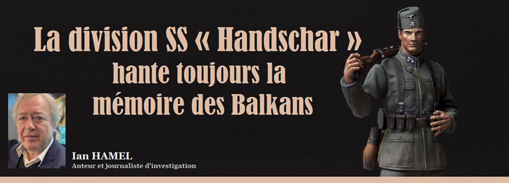
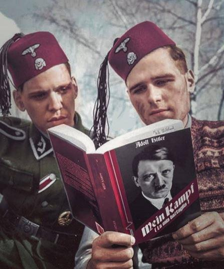
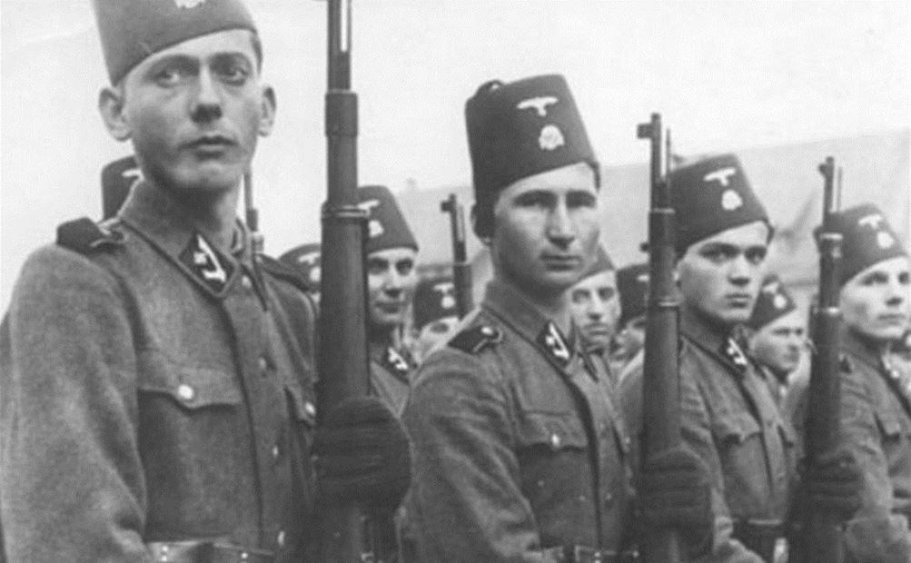

La division SS « Handschar » hante toujours la mémoire des Balkans
par Ian HAMEL

Le chercheur Xavier Bougarel1, spécialiste de l'islam des Balkans, livre un chiffre effrayant. Alors qu'en France, pendant la Seconde Guerre mondiale, entre 8 500 et 9 000 Français ont porté l'uniforme SS (sans compter les Alsaciens et Mosellans incorporés de force), en Bosnie, ce sont 20 000 à 30 000 musulmans qui ont rejoint la division SS Handschar. Or, à cette époque, la Bosnie ne comptait que 1,5 million de musulmans. Dans une interview donnée au Courrier des Balkans2, Xavier Bougarel, auteur de La Division Handschar, Waffen-SS de Bosnie, 1943-19453, explique que la mémoire de cette division allemande, « dont la chair à canon était originaire de Bosnie-Herzégovine », continue à empoisonner encore aujourd'hui « les relations entre les Bosniaques et les Serbes ».
À Belgrade, en Serbie, comme à Banja Luka, capitale de la République serbe de Bosnie, la population ne pardonne toujours pas aux Occidentaux de les avoir désignés comme les « méchants », les agresseurs, les criminels, durant la guerre des Balkans, alors que les musulmans passaient pour d'innocentes victimes. Certes, il ne s'agit nullement de minimiser les atrocités commises par le régime du président serbe Slobodan Milosevic mais de rééquilibrer quelque peu les torts réciproques. En commençant par écorner l'image un peu trop idyllique d'Alija Izetbegovic, président de Bosnie-Herzégovine de 1990 à 1996 (décédé en 2003), présenté comme un penseur, un philosophe, et surtout, comme un musulman modéré.
Des musulmans, supplétifs des nazis
En avril 1943, Amin al-Husseini, le grand mufti de Jérusalem, a pris fait et cause pour Hitler, appelant à l'extermination des juifs. Il séjourne à Sarajevo, après des escales à Zagreb et à Banja Luka. Durant cette visite, organisée par les responsables de la SS, il reçoit « les représentants des principales associations musulmanes ainsi que des délégations venues de toute la Bosnie-Herzégovine, du Sandjak et même d'Albanie », écrit Xavier Bougarel. Alija Izetbegovic fait partie de la délégation de l'organisation des Jeunes Musulmans reçue par Amin al-Husseini. Or « certains membres de cette organisation ont combattu dans la division Handschar, notamment trois d'entre eux en tant qu'imams ».
Le but de la venue d'Amin al-Husseini ? Pousser les musulmans à soutenir l'Allemagne nazie. Si Heinrich Himmler a choisi en 1943 de balayer les critères raciaux en vigueur dans la Waffen SS et de recruter des musulmans, c'est que depuis les défaites en Russie, le IIIe Reich commence à manquer cruellement de combattants. En octobre 2003, le New York Times a affirmé sans nuance que le futur président de Bosnie « a soutenu la division Handschar ». Xavier Bougarel, beaucoup plus prudent, rappelle qu'Alija Izetbegovic n'avait que 18 ans en 1943. Difficile d'imaginer qu'il ait pu avoir une véritable responsabilité dans le recrutement de combattants musulmans. Si en 1946, le régime communiste le condamne à trois ans de prison, ce n'est pas pour collaboration avec l'ennemi, mais pour « activité panislamique ». Toutefois, la question reste posée : « Izetbegovic rejetait-il cette division SS parce que nationale-socialiste, ou parce qu'insuffisamment musulmane ? »
Alija Izetbegovic dénigre le christianisme
L'histoire a surtout retenu les atrocités commises par le régime fasciste croate, allié pendant la Seconde Guerre mondiale de l'Allemagne nazie. Oubliant les crimes des musulmans bosniaques, qui traquaient les résistants serbes. Certains musulmans ont aussi « participé à l'extermination tardive des juifs en Hongrie, à la fin de l'année 1944 », rapporte l'auteur. L'Occident ne s'est guère intéressé non plus à l'activisme d'Alija Izetbegovic, emprisonné à plusieurs reprises sous Tito pour « propagande islamiste ». Son ouvrage Le Manifeste islamique n'a été traduit en français que plusieurs années après la fin de la guerre des Balkans4. Ce livre lui a valu quatorze ans de prison en 1983. Il n'en fera que six.
Le futur président bosniaque n'y tient pas un discours particulièrement modéré. N'écrit-il pas que « toute personne, qui que ce soit, qui abandonne l'Islam ne récolte que l'exécration et l'opposition » ? Alija Izetbegovic, présenté pendant la guerre comme un démocrate, y avoue son admiration pour le Pakistan, « seule république islamique qui déclare aujourd'hui son islamité ». Selon lui, « reconnaître le pouvoir absolu d'Allah signifie le désaveu total et le rejet définitif de tout autre pouvoir absolu ». Il souligne qu'Allah est « l'unique vrai Dieu, l'unique véritable Créateur, l'unique Être digne de soumission de l'homme à lui ». Un discours pour le moins intolérant vis-à-vis des autres communautés peuplant la Bosnie : orthodoxes, catholiques, juifs. Le futur président bosniaque ne cache d'ailleurs pas son mépris pour le christianisme, parlant d'« une révélation divine, en partie falsifiée ». Quant aux Juifs en « Palestine », ils mèneraient une action « dans laquelle il y a autant de cruauté et de sauvagerie que d'imprévoyance et d'aventure ».5
4. Traduit par Ahmed Abidi, Éditions Al Bouraq, 1999.
5. Cet article de Ian Hamel a été initialement publié par le journal Le Point qui nous a autorisé, sur demande de l’auteur, la reproduction dans ce numéro. Source :https://www.msn.com/fr-fr/actualite/monde/la-division-ss-handschar-hante-toujours-la-m%C3%A9moire-des-balkans/ar-BB18DzeV

Partager cette page